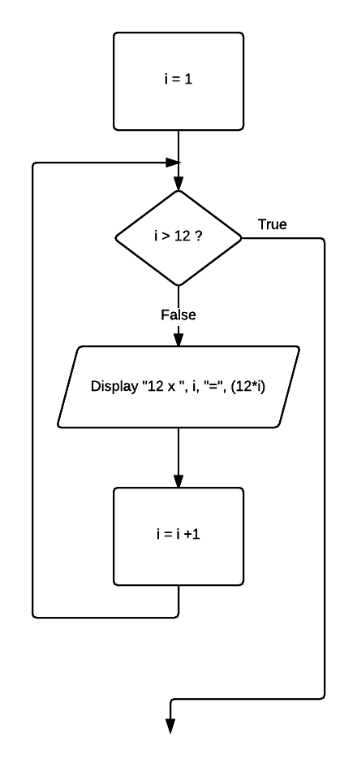

07 Counted loop
Counted loops or FOR / NEXT loops can be regarded as special cases of repetition and, depending on the language in which they are implemented, are implemented as either pre-test or post-test repetitions.
Problem
Develop a procedure to print out the 12 times table.
Pseudocode
FOR i = 1 to 12 STEP 1 Display "12 x ", i," = ", (12*i) NEXT i
Javascript
for (var i = 1; i < 13; i = i + 1) {
console.log('12 x ' + i + ' = ' + (i * 12));
}
Flowchart
To represent a FOR / NEXT loop in flowchart format, it is necessary to describe the required logic as the equivalent pre- or post-test.
Open this document in Chrome and open the developer tools Windows: F12 or Ctrl-shift+I, Mac: Cmd + Opt + I.
Click run button.
Observe the console output.
Your task
Modify program.js: Develop a procedure to print out the 7 times table.